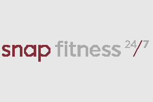

What is Snap Fitness
Snap Fitness is a 24/7 gym that makes it totally easy to stay
and keep fit, no matter your schedule or overall fitness level. Whether you’re just getting started into a gym
or you are already
know your way around a gym, Snap gives you the tools, and support to reach your goals timed to your own way.
Our nation-wide clubs are equipped with high-quality strength, cardio machines, free weights, and more
to help you become yourself. Many locations also offer fitness challenges, and virtual or in-person
personal training ran by state of the art trainers to help keep you motivated and become the best version of
yourself
At Snap Fitness, we believe that fitness should be simple and stress free. That’s why we focus on
being a clean, safe, and welcoming gym where everyone feels comfortable doing any workout type.
With 24/7 access, and a nation wide club membership, you’re in total control of how you train. From loosing
weight to gaining muscle snap fitness will always be by your side. Becoming your number 1 supporter
Pricing
Month-To-Month Membership
$19.50 Per Week (inculding a $99 joining fee)
Perks Include:
- Full Gym Access
- 24 Hour Access
- Personal Trainers Available
- Private Showers
- Body Scanner
- Free Wifi
- Access to Snap Gyms Country Wide
- Group Classes
- Snap App
Google Reviews

gym always a mess, weights out of place and never put away. trainers are to self centered to help put them away
before cleaners come night. messy bathrooms.
didnt take a complaint seriously nor never followed it up. only thing they know how to follow uo is when u miss
a payment. no why havnt u come are you ok just wheres our money.